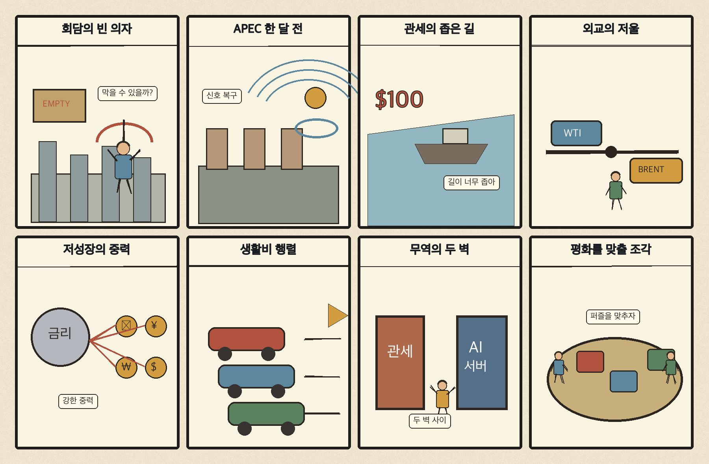
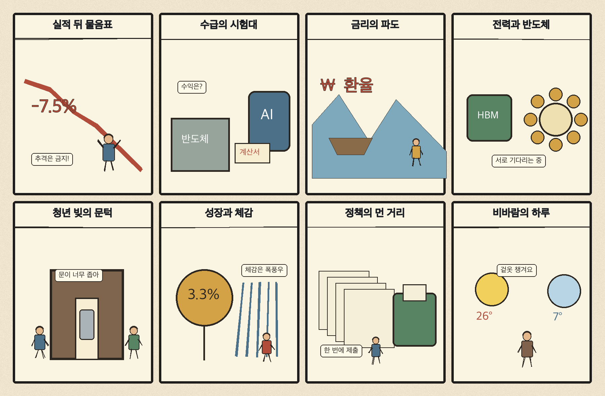

01
슈퍼마이크로컴퓨터 · 34.48→31.63달러 · -8.27%
내용요약 시가 대비 -8.25%로 조사 종목 중 낙폭이 가장 컸습니다. 인공지능 투자 부채와 수익성 우려가 서버 관련 고변동 종목에 집중됐습니다.
예상여파 국내 인공지능 서버·부품주에도 밸류에이션 압력이 이어질 수 있어 월요일 시초가 추격을 피해야 합니다.
MORNING_BRIEFING_20261018
작성 시각: 2026-10-18 06:32 KST · 직전 미국 정규장과 2026-10-18 KST 당일 공개 기사 기준
직전 미국 정규장인 10월 16일 뉴욕증시는 다우 -0.34%, S&P 500 -1.09%, 나스닥 -2.15%로 하락했습니다. 인공지능 투자 부채와 수익성 우려가 기술주를 압박했고 국제유가 상승으로 에너지주는 상대 강세였습니다. 일요일인 오늘 한국 증시는 휴장입니다. 월요일에는 금요일 국내 반등보다 미국 기술주 급락, 고유가와 환율·외국인 수급을 먼저 확인해야 합니다.
| 지수 | 종가 | 등락률 | 한국 증시 시사점 |
|---|---|---|---|
| 다우존스 | 52,002.41 | -0.34% | 주말 뒤 위험회피와 외국인 수급 약화 가능성 점검 |
| S&P 500 | 7,659.44 | -1.09% | 주말 뒤 위험회피와 외국인 수급 약화 가능성 점검 |
| 나스닥 종합 | 26,140.03 | -2.15% | 인공지능·반도체 고평가 부담으로 국내 성장주 심리 압박 |
인공지능 투자 회수 우려가 고평가 기술주 매도를 키웠습니다.
금요일 5,668.05로 반등했지만 급락분을 일부만 회복했습니다.
원전 재가동과 특수유리 기판이 인공지능 인프라의 새 병목으로 부상했습니다.
공식 추천 없이 월요일 환율·수급·시초가를 재확인합니다.
10월 17일 보고서는 토요일 휴장과 미국 기술주 급락·고유가 충격 때문에 점수·확률·손익비 문턱을 모두 검증한 종목이 없어 공식 추천을 내지 않았습니다. 게시 당시 판단을 유지하며 사후 종목을 추가하지 않습니다.
| 시장 | 종가 | 등락률 | 기준 |
|---|---|---|---|
| KOSPI | 5,668.05 | +2.05% | 10월 16일 · 시가 대비 +0.25% |
| KOSDAQ | 794.78 | +4.46% | 10월 16일 · 시가 대비 +2.93% |
| 다우존스 | 52,002.41 | -0.34% | 미국 10월 16일 정규장 |
| S&P 500 | 7,659.44 | -1.09% | 미국 10월 16일 정규장 |
| 나스닥 종합 | 26,140.03 | -2.15% | 미국 10월 16일 정규장 |
다이아몬드백 +3.52%, 옥시덴털 +2.03%로 유가 상승 수혜가 나타났습니다.
월마트는 시가 대비 +0.56%로 기술주 급락 속 상대 강세였습니다.
팔란티어 -8.07%, 크라우드스트라이크 -7.77%로 고평가 성장주가 압박받았습니다.
슈퍼마이크로컴퓨터는 시가 대비 -8.25%로 조사 종목 중 낙폭이 컸습니다.
내용요약 시가 대비 -8.25%로 조사 종목 중 낙폭이 가장 컸습니다. 인공지능 투자 부채와 수익성 우려가 서버 관련 고변동 종목에 집중됐습니다.
예상여파 국내 인공지능 서버·부품주에도 밸류에이션 압력이 이어질 수 있어 월요일 시초가 추격을 피해야 합니다.
내용요약 시가 대비 -8.07%로 급락했습니다. 인공지능 소프트웨어의 높은 기대치와 투자 회수 우려가 동시에 재평가됐습니다.
예상여파 국내 소프트웨어·인공지능 테마에도 위험회피가 번질 수 있으며 현금흐름이 약한 종목의 변동성이 더 커질 수 있습니다.
내용요약 시가 대비 -7.77%로 보안 소프트웨어까지 매도가 확산됐습니다.
예상여파 보안 수요의 장기 성장과 별개로 고평가 성장주의 할인율 부담이 커져 국내 보안주의 단순 동조 매수는 경계합니다.
내용요약 시가 대비 -6.70%로 우주산업 고변동주가 약세였습니다.
예상여파 산업 성장 기대와 단기 주가 흐름은 분리해서 봐야 하며 개발 실패·자금조달 위험이 큽니다.
내용요약 시가 대비 +3.52%로 조사 종목 중 상승 폭이 가장 컸습니다. 유가 급등과 공급 불안이 에너지 생산주의 상대 강세로 이어졌습니다.
예상여파 국내 정유·에너지에는 심리상 우호적이지만 고유가는 항공·운송·화학과 소비 전반에는 비용 충격입니다.
한국 증시는 일요일 휴장입니다. 금요일 KOSPI는 +2.05%, KOSDAQ은 +4.46% 반등했지만 미국 나스닥이 뒤이어 -2.15% 하락했습니다. 월요일에는 반도체·인공지능 성장주의 시초가 압박과 에너지주의 상대 강세 가능성을 함께 보되, 원·달러 환율과 외국인 현·선물 수급이 안정되기 전에는 급락·급등 종목을 추격하지 않습니다.
오늘은 추천 없음 — 현금 관망
일요일 국내 증시 휴장으로 당일 시가 진입 기준을 세울 수 없습니다. 또한 미국 기술주 급락과 고유가 속에서 전일까지의 수급·컨센서스 변화, 30건 이상 유사 조건 표본을 함께 확보해 종합점수 75점·상승확률 60%·예상 손익비 1.5를 모두 검증한 종목이 없습니다.
관심 연결종목 전력 인프라·반도체 기판의 중장기 수요와 에너지주의 유가 민감도는 월요일 관찰 대상일 뿐 매수 추천이 아닙니다. 장전 갭과 시초가 변동성을 확인하기 전 추격매수를 금지합니다.
나스닥 -2.15%가 월요일 국내 성장주에 반영되는 정도를 봅니다.
월요일 개장 전 원·달러와 외국인 선물 방향이 핵심입니다.
미중러·북미 접촉 가능성이 통상과 안보 기대에 미치는 영향을 봅니다.
수도권 최대 80㎜, 천둥·돌풍과 교통 지연에 유의합니다.
핵심 요약: 인공지능 경쟁은 모델 성능을 넘어 전력, 원전, 반도체 기판과 로봇 양산 역량으로 옮겨가고 있습니다. 과학 성과 검증과 기업 위험관리도 함께 부각돼 기술 도입의 속도보다 신뢰성과 운영 체계가 중요해졌습니다.
내용요약 미국이 인공지능 데이터센터의 막대한 전력 수요에 대응하려 가동을 멈춘 원전까지 다시 활용하는 흐름과 한국의 준비 과제를 다룬 당일 기사입니다.
예상여파 전력 확보 속도가 데이터센터 증설과 인공지능 산업 경쟁력을 좌우하면서 원전·가스·전력망 투자와 안전·요금 논의가 함께 커질 수 있습니다.
내용요약 오픈AI가 제시한 나비에-스토크스 관련 증명 주장에 대해 수학계가 기존 문제와 접근 대상이 다르다고 반박했다는 당일 보도입니다.
예상여파 인공지능의 과학 성과는 결과 발표보다 동료 검증과 재현성이 중요하다는 점이 부각돼 연구 신뢰성 기준이 강화될 수 있습니다.
내용요약 인공지능 반도체의 열과 신호 손실을 줄이기 위한 특수유리 기판 기술과 산업 가능성을 다룬 당일 기사입니다.
예상여파 고성능 패키징 병목을 줄일 경우 기판·소재·장비 공급망에 기회가 생기지만 양산 수율과 원가 검증이 핵심입니다.
내용요약 중국이 제조 현장과 방대한 실증 환경을 바탕으로 로봇 기술에서 인공지능 패권 경쟁의 우위를 확보할 수 있다는 전망을 전한 기사입니다.
예상여파 피지컬 인공지능 경쟁이 모델 성능에서 센서·구동계·공장 데이터·대량생산 역량으로 확대될 수 있습니다.
내용요약 기업이 인공지능을 전사 도입하기 전에 위험관리, 부서 간 협업, 직원 교육 체계를 먼저 갖춰야 한다는 당일 분석입니다.
예상여파 도입 속도만 앞세우면 보안·오답·책임 공백 비용이 커질 수 있어 운영 통제와 교육 투자가 소프트웨어 구매만큼 중요해집니다.
핵심 요약: 우크라이나 3자 회담과 선전 APEC 정상외교 가능성이 주목되는 가운데 북미 관세 협상은 교착됐습니다. 일본 성장 둔화와 프랑스 고물가 시위는 세계 경제의 구조적 저성장과 생활비 압박을 보여줍니다.
내용요약 젤렌스키 우크라이나 대통령이 미국에서의 3자 회담 가능성을 언급했지만 장소와 구체 일정은 정해지지 않았다는 당일 보도입니다.
예상여파 대화의 틀이 구체화되면 전쟁·에너지 위험 완화 기대가 생길 수 있으나 합의 전까지는 외교 발언에 따른 변동성이 이어질 수 있습니다.
내용요약 미국과 멕시코의 협상이 교착되며 자동차·철강·알루미늄 관세 인하가 지연되고 있다는 당일 보도입니다.
예상여파 북미 공급망의 원가와 투자 결정 불확실성이 길어져 자동차·금속 기업의 생산지 재편과 가격 전가 압력이 커질 수 있습니다.
내용요약 중국 선전 아시아태평양경제협력체 정상회의를 한 달 앞두고 미중러 3자 회담과 북미 접촉 가능성이 주목된다는 당일 기사입니다.
예상여파 정상외교 성사 여부가 무역·안보 위험 프리미엄에 영향을 주며 한국에는 통상과 한반도 외교를 함께 조율해야 하는 과제가 됩니다.
내용요약 일본 경제가 성장 동력을 잃으며 명목 경제 규모 순위가 추가로 밀릴 수 있다는 해외 전망을 소개한 당일 기사입니다.
예상여파 저성장·고령화와 엔화 흐름이 일본의 소비·투자 여력에 영향을 주고 한국 기업의 수출 경쟁과 관광 수요에도 변수가 될 수 있습니다.
내용요약 고물가와 교육환경에 대한 반발로 프랑스에서 대규모 시위가 벌어졌다는 당일 국제 보도입니다.
예상여파 생활비 압박이 사회 갈등과 재정정책 부담으로 이어져 유럽 소비심리와 정책 추진 속도를 낮출 수 있습니다.

핵심 요약: 반도체 실적과 외국인 수급의 괴리, 청년 다중채무와 금리 부담이 단기 위험으로 부각됐습니다. 잠재성장률 반등 전망은 긍정적이지만 생산성·고용 개선의 실제 지속성이 중요하며 오늘은 전국 강한 비에 대비해야 합니다.
내용요약 반도체 기업의 높은 이익에도 외국인이 삼성전자와 SK하이닉스를 매도하는 배경을 업황 지속성, 가격과 수급 관점에서 짚은 당일 기사입니다.
예상여파 좋은 실적과 단기 주가 방향은 다를 수 있어 환율·외국인 수급·메모리 가격의 지속성을 함께 확인해야 합니다.
내용요약 부채가 있는 청년 10명 중 6명이 여러 금융기관에 빚을 진 다중채무 상태라는 조사와 채무조정 재설계 필요성을 다룬 기사입니다.
예상여파 고금리와 취업 불안이 겹치면 연체와 소비 위축이 심해질 수 있어 조기상담과 상환능력 중심 지원이 중요해집니다.
내용요약 한국의 잠재성장률이 장기간 하락 뒤 40년 만에 연속 반등할 수 있다는 전망을 전한 당일 기사입니다.
예상여파 생산성·노동공급 개선이 실제 투자와 소득 증가로 이어지는지 확인되면 중장기 성장 기대를 높일 수 있습니다.
내용요약 전문가 10명이 이번 달 기준금리 동결을 예상하고 이후 추가 인상 가능성을 전망했다는 당일 설문 보도입니다.
예상여파 대출금리와 원화 가치, 부동산·내수 부담이 이어질 수 있어 가계와 기업의 조달비용 관리가 중요합니다.
내용요약 일요일 전국에 천둥·번개와 돌풍을 동반한 강한 비가 내리고 수도권 등에 최대 80㎜가 예상된다는 당일 예보입니다.
예상여파 침수와 교통 지연, 낙하물 사고 가능성이 있어 배수구·시설물 점검과 야외 일정 조정이 필요합니다.
